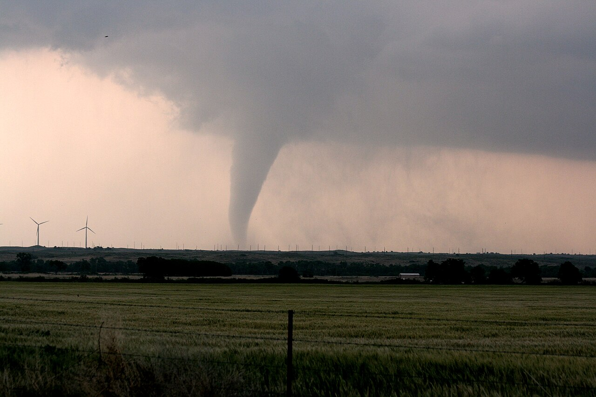
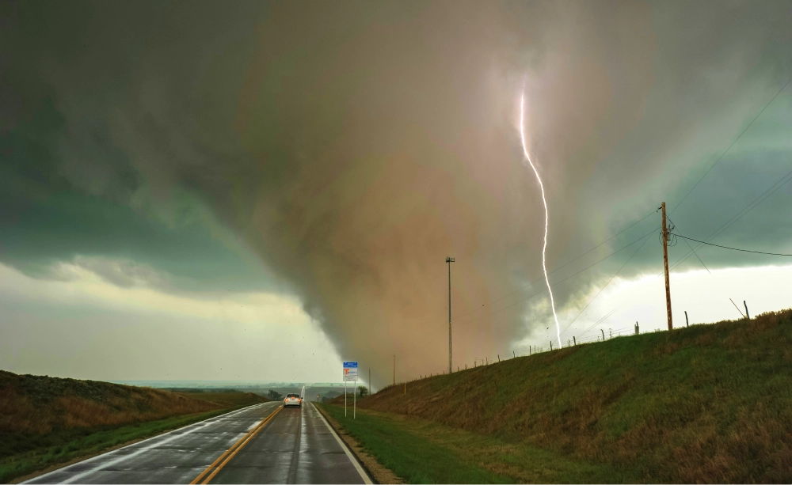
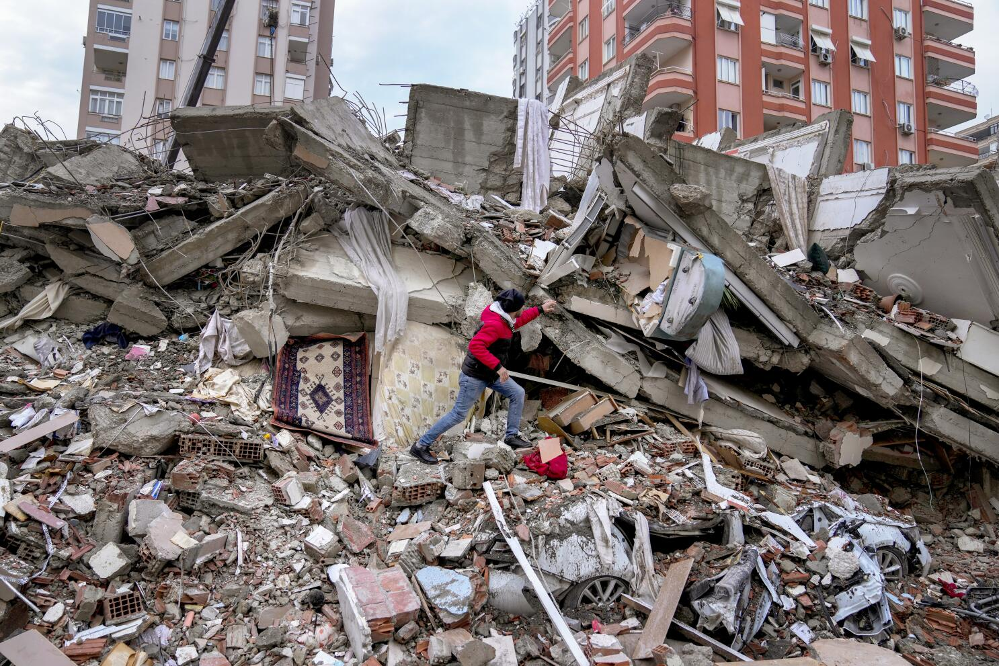
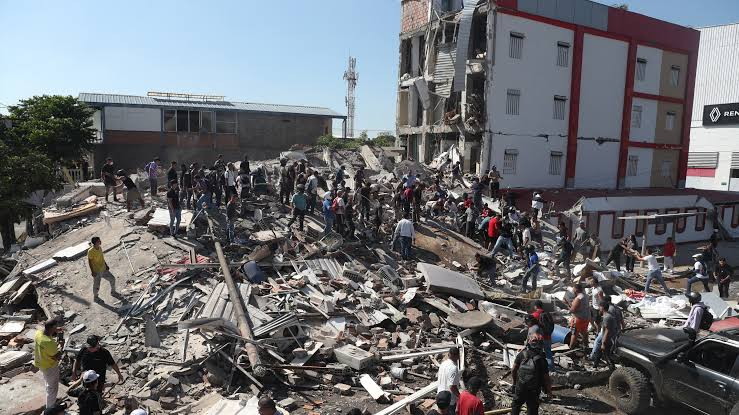
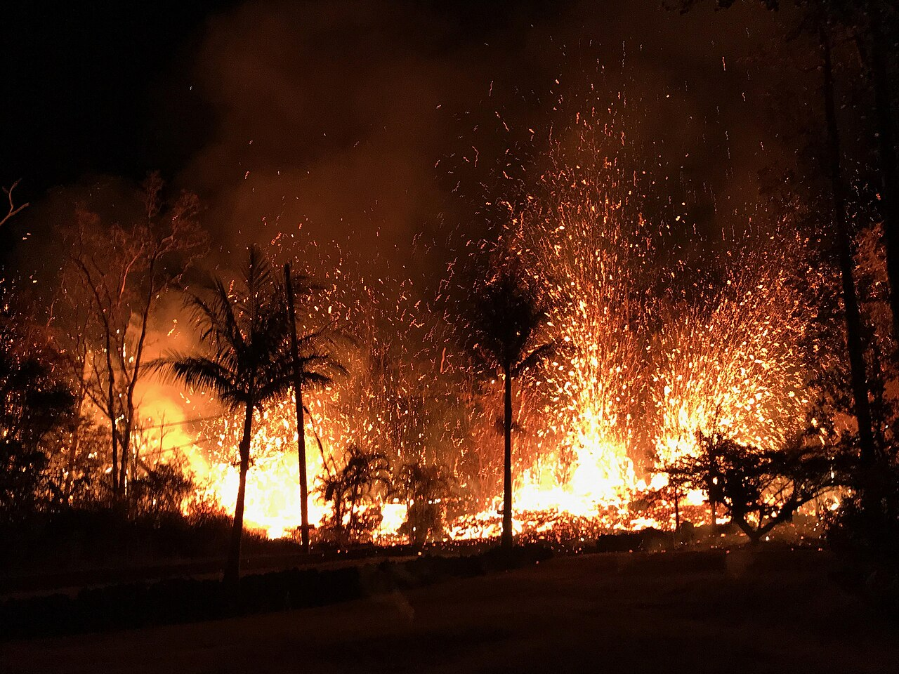
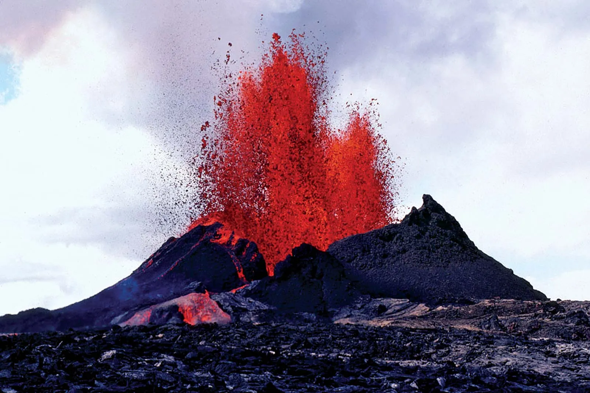

Natural Disasters: Causes and Effects
A natural hazard is a potentially dangerous natural event. A disaster happens when that hazard causes serious harm, disruption or loss to people, communities, property or the environment.
1. Floods


A flood occurs when water covers land that is normally dry. Floods may result from heavy rainfall, overflowing rivers, storms or poor drainage.
Effects on people
- Homes, schools, roads and bridges may be damaged.
- Crops and livestock can be affected.
- Transport and access to services may be interrupted.
- Families may need to move temporarily.
Effects on the environment
- Soil erosion and damage to vegetation.
- Changes to riverbanks and habitats.
- Water contamination in some areas.
2. Droughts


A drought is a prolonged period with much less rainfall than normal. It develops slowly and can place pressure on water, agriculture and livelihoods.
- Water shortages may occur.
- Crop production can decline.
- Livestock may suffer from lack of grazing and water.
- Vegetation and wildlife can be stressed.
3. Tornadoes


A tornado is a rapidly rotating column of air extending from a thunderstorm toward the ground. Tornadoes can damage buildings, uproot trees and scatter dangerous debris.
4. Earthquakes


An earthquake is sudden ground shaking caused by the release of energy in the Earth's crust. Many occur near faults and tectonic plate boundaries.
- Buildings and roads can be damaged.
- Water, electricity and communication may be interrupted.
- Earthquakes can trigger landslides and other hazards.
5. Volcanoes


A volcano is an opening in the Earth's crust through which magma, ash and gases may reach the surface. Eruptions can reshape landscapes, damage property and force communities to evacuate.
How can communities prepare?
- Listen to official warnings.
- Know evacuation routes and safe places.
- Keep emergency supplies where possible.
- Protect important infrastructure.
- Teach communities about hazards in their area.